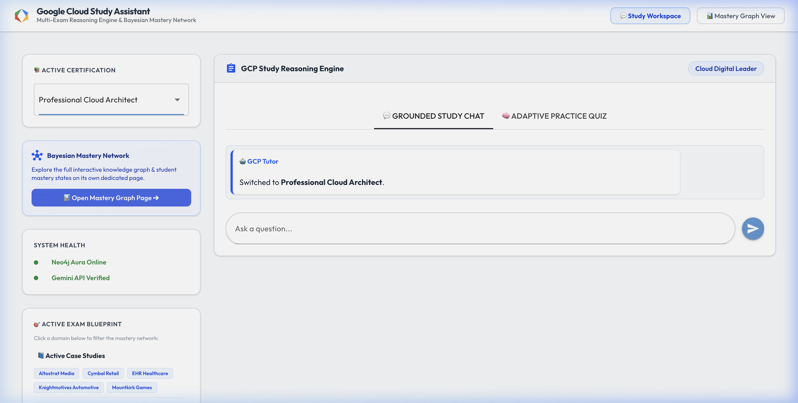
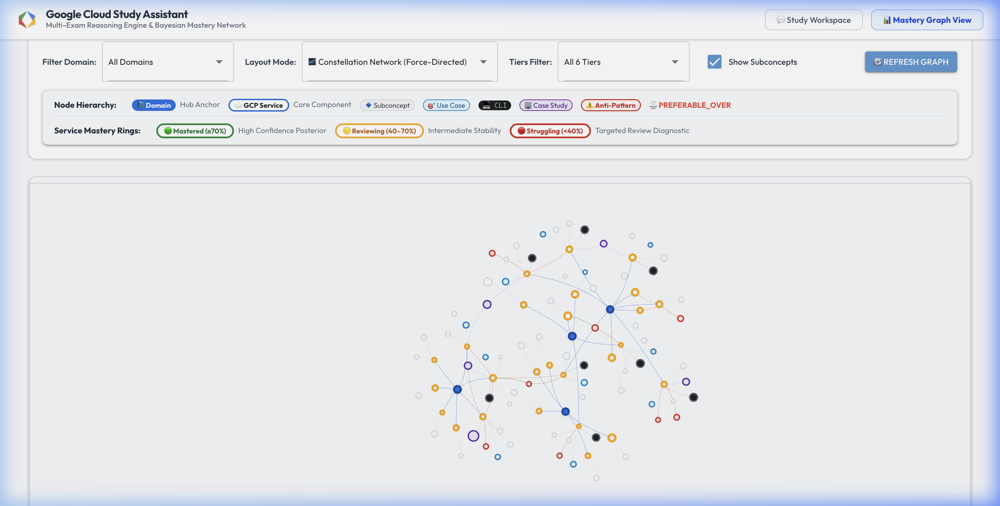
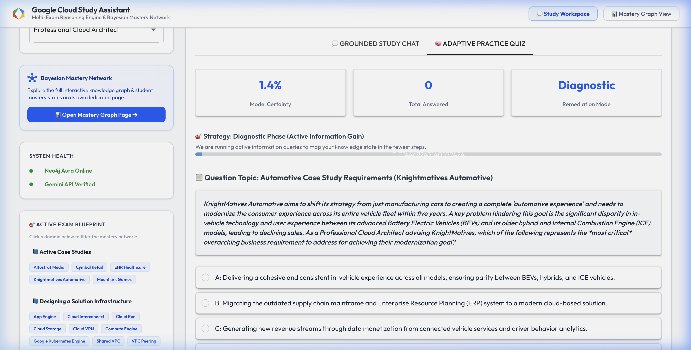
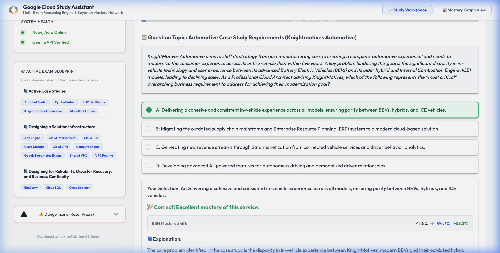
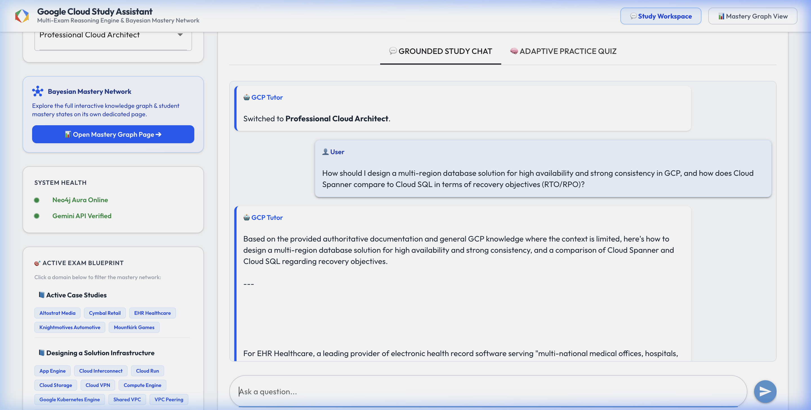
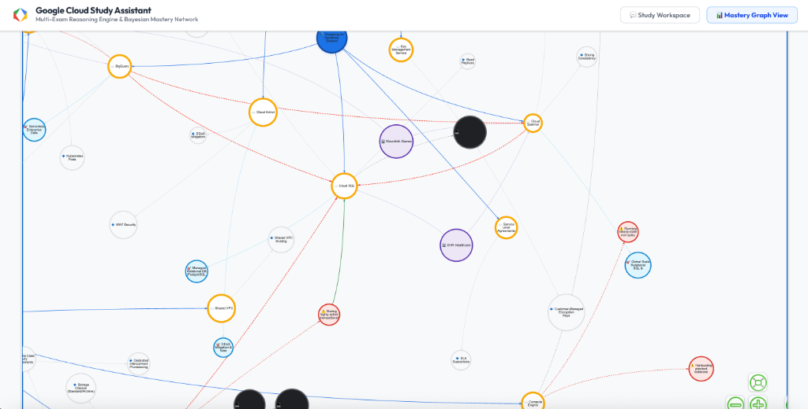
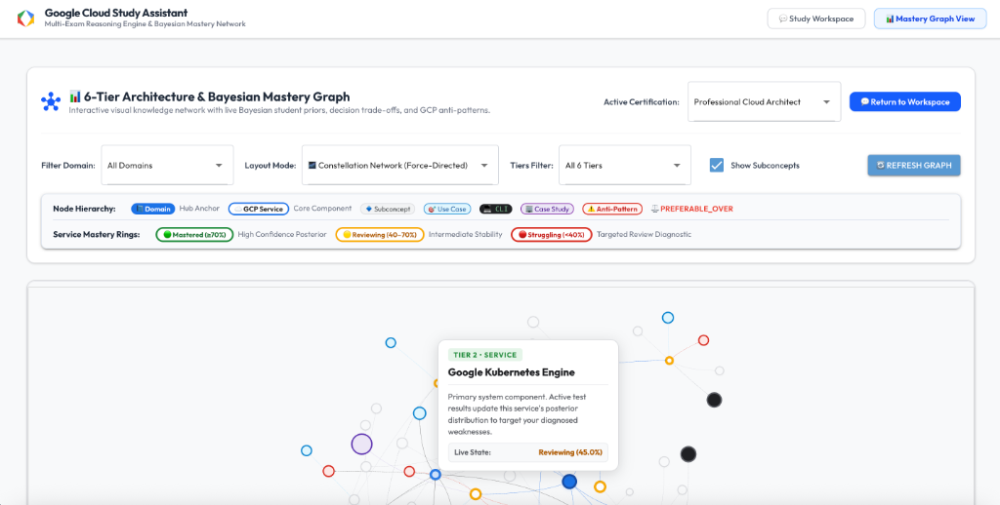
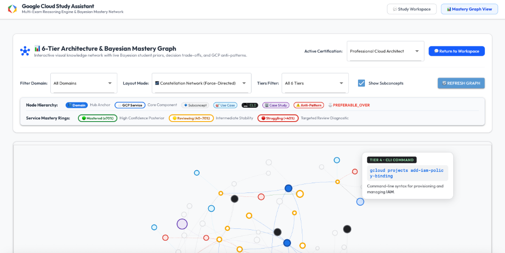

Preparing for Google Cloud Platform (GCP) certifications like the Professional Cloud Architect (PCA) or the Professional Data Engineer (PDE) is a massive undertaking. The scope is vast, spanning hundreds of services, intricate configuration rules, detailed CLI commands, and complex case studies. Standard LLMs often fail in this context; they hallucinate, miss subtle trade-offs, and lack a structured curriculum map.
To address this challenge, I designed and built an interactive study assistant. It couples a Neo4j Knowledge Graph storing GCP frameworks with an Adaptive Bayesian Learning Engine. The application dynamically assesses a student's strengths and weaknesses through a diagnostic quiz, visualizes their mastery in real time, and feeds their current knowledge gaps back into a GraphRAG Chatbot to serve custom troubleshooting scenarios.

Core Technology Stack & Libraries
This project is built as a lightweight, performant Python application using the following key dependencies:
- Neo4j and neo4j-graphrag: Serves as the database storing the document nodes, exam blueprints, hierarchical service taxonomy, and vector search indices.
- NiceGUI: A Python-based frontend framework built on top of FastAPI, Vue, and TailwindCSS, which enables writing a reactive web interface in pure Python.
- pgmpy: A dedicated library for Probabilistic Graphical Models in Python, which manages the structures, conditional probability tables, and exact inferences of our Bayesian Belief Network.
- Google Generative AI (Gemini API): Powered by
gemini-2.5-flashfor generating scenario questions and grounded chatbot responses, andgemini-embedding-001for vector embeddings. - PyPDF & BeautifulSoup4: Handles the raw ingestion of official GCP architectural frameworks and PDF case study resources.
1. The Graph Taxonomy and Ingestion Process
The system organizes exam preparation into a strict four-level hierarchical taxonomy. An Exam (e.g., PCA) contains multiple syllabus Domains. Each Domain tests knowledge of specific GCP Services, which in turn group detailed SubConcepts.
To support advanced reasoning, I extended this taxonomy with a "third-tier" leaf layer, which connects services to:
- UseCase Nodes: Connects services to their optimal deployment contexts (e.g., Cloud Storage is linked as
BEST_FOR"Unstructured Data & Cost-Effective Archiving"). - CLICommand Nodes: Pairs services with critical administrative shell syntax (e.g., GKE is linked via
SCALED_BYtokubectl scale deployment). - AntiPattern Nodes: Links services to common pitfalls (e.g., using Cloud SQL for globally distributed horizontal scaling is marked as a
COMMON_PITFALLresolved by switching to Cloud Spanner). - GCP Architectural Decision Boundaries: Configures
PREFERABLE_OVERrelationships between competing services, specifying the exact conditional reasons for selecting one over another.
Data Ingestion Pipeline
The ingestion process (implemented in sync_pipeline.py) follows a robust delta-sync workflow. It downloads the official GCP documentation page or case study PDF, computes its MD5 hash, and compares it with the database's stored hash. If changes are detected, it commenses ingestion:
- Document Chunking: The raw text is divided using a sliding window algorithm to ensure semantic continuity, using a chunk size of 1000 characters and a 200-character overlap.
- Taxonomy Mapping: Chunks are batch-inserted and connected to the core
Examnode. A regex scanner then checks the chunk text against all registered GCP service names, dynamically creatingDISCUSSESrelationships from the chunk to matchedServicenodes. - Sequential Linking: To preserve the original narrative order for context retrieval, chunks from the same document are linked sequentially using
NEXTrelationships:(c1)-[:NEXT]->(c2). - Embedding Generation & Indexing: The text content is embedded in batches using Gemini and uploaded to Neo4j. We then register a cosine-similarity vector index on the
Chunknodes.
# Excerpt from sync_pipeline.py: Ingestion & Relationship Building
def sync_source(driver, source_key, source_name, url, exam_id, all_services, is_pdf=False):
res = requests.get(url, timeout=15)
content_bytes = res.content
current_hash = hashlib.md5(content_bytes).hexdigest()
stored_hash = get_stored_hash(driver, f"{exam_id}_{source_key}")
if current_hash == stored_hash:
return True # Content has not changed
raw_chunks = parse_pdf_case_study(source_key, url) if is_pdf else parse_html_framework(url, source_name)
# Process sliding window chunking
chunks = []
for rc in raw_chunks:
text_slices = chunk_text_sliding_window(rc["text"], chunk_size=1000, overlap=200)
for idx, slice_text in enumerate(text_slices):
sub_chunk = rc.copy()
sub_chunk["chunk_id"] = f"{exam_id}_{rc['chunk_id']}_part{idx}"
sub_chunk["text"] = slice_text
chunks.append(sub_chunk)
# Purge old chunks and perform batch inserts
delete_source_chunks(driver, source_name, exam_id=exam_id)
insert_chunks_batch(driver, chunks, source_exam=exam_id)
link_chunks_to_services_batch(driver, chunks, all_services)
build_sequential_relationships(driver, source_name, exam_id=exam_id)
# Update embeddings in Neo4j
embedded_chunks = generate_embeddings_in_batches(chunks)
update_chunk_embeddings_batch(driver, embedded_chunks)
set_stored_hash(driver, f"{exam_id}_{source_key}", current_hash)2. The Bayesian Engine: Modeling Student Mastery
To avoid generic linear study paths, the application builds a **Bayesian Belief Network (BBN)**. BBNs are directed acyclic graphical models where nodes represent random variables and edges represent conditional dependencies. In our network, nodes represent latent (hidden) mastery states of the student, and the final leaf nodes represent observable quiz question outcomes.

Network Hierarchy and Mathematical Formulation
The network structure follows the hierarchy:
$$\text{Domain} \rightarrow \text{Service} \rightarrow \text{SubConcept} \rightarrow \text{Question}$$
Every node in our network is modeled as a binary random variable representing mastery (0 = Unmastered, 1 = Mastered):
- Domain Nodes (Root): Represent high-level syllabus sections. Their prior probabilities are derived from beta tracking distributions:
$$P(D_i = 1) = \theta_i \sim \text{Beta}(\alpha_{D_i}, \beta_{D_i})$$
The expected probability of mastery is the mean of this distribution:$$\mathbb{E}[\theta_i] = \frac{\beta_{D_i}}{\alpha_{D_i} + \beta_{D_i}}$$
- Service & SubConcept Nodes (Conditional): Represent the mid-tier services. Their probabilities are conditional on their parent nodes. For a node \(X\) with parents \(\text{Parents}(X)\), we define the conditional probability table (CPT) such that mastery probability increases linearly with the number of mastered parent nodes:
$$P(X=1 \mid \text{Parents}(X)) = 0.1 + 0.7 \cdot \frac{\sum_{P \in \text{Parents}(X)} \mathbb{I}(P = 1)}{|\text{Parents}(X)|}$$
This modeling choice reflects reality; a student cannot easily master GKE node configurations if they have zero mastery of both basic VM concepts and container registers. - Question Nodes (Observable Leaves): Model actual quiz answers. Since questions are imperfect measurement tools, we introduce conditional error rates (slip and guess probabilities):
$$P(\text{Question}=1 \mid \text{SubConcept}=1) = 0.90 \quad (\text{Slip rate} = 10\%)$$
$$P(\text{Question}=1 \mid \text{SubConcept}=0) = 0.05 \quad (\text{Guess rate} = 5\%)$$
For Researchers: Conjugate Beta-Binomial Updates
Rather than using computationally heavy Markov Chain Monte Carlo (MCMC) algorithms, the engine performs exact local updates. When a user submits a quiz answer for a subconcept, we record a Bernoulli outcome \(y \in \{0, 1\}\). Since the Beta distribution is conjugate to the Binomial likelihood, the posterior update remains in the Beta family:
$$\alpha \leftarrow \alpha + (1 - y) \quad \text{and} \quad \beta \leftarrow \beta + y$$
This allows us to perform real-time probability updates inside the web application loop with zero latency.
# Excerpt from utils/bayesian_engine.py: Model Construction
def build_bayesian_model(blueprint_records, user_stats):
model = DiscreteBayesianNetwork(edges)
cpds = []
# 1. Define Domain prior CPDs (root nodes)
for d_node in domain_nodes:
d_name = d_node.replace("_Domain", "")
stats = user_stats.get("domains", {}).get(d_name, {"alpha": 1, "beta": 1})
p_mastery = stats["beta"] / (stats["alpha"] + stats["beta"])
cpds.append(TabularCPD(variable=d_node, variable_card=2, values=[[1.0 - p_mastery], [p_mastery]]))
# 2. Define Service CPDs conditional on their parent domains
for s_node in service_nodes:
parents = sorted(list(model.get_parents(s_node)))
k = len(parents)
cols = 2**k
row_fail, row_pass = [], []
for c in range(cols):
set_bits = sum((c >> i) & 1 for i in range(k))
p_master = 0.1 + 0.7 * (set_bits / k)
row_pass.append(p_master)
row_fail.append(1.0 - p_master)
cpds.append(TabularCPD(variable=s_node, variable_card=2, values=[row_fail, row_pass], evidence=parents, evidence_card=[2] * k))
# 3. Define Question CPDs conditional on SubConcept mastery
for q_node in question_nodes:
sub_node = q_node.replace("_Question", "_SubConcept")
cpds.append(TabularCPD(
variable=q_node, variable_card=2,
values=[[0.95, 0.10], [0.05, 0.90]], # Slip & guess rates
evidence=[sub_node], evidence_card=[2]
))
model.add_cpds(*cpds)
model.check_model()
return model, latent_nodes, candidate_questions3. Active Learning & Thompson Sampling
The Bayesian engine operates in two study modes: **Diagnostic Mode** and **Study Mode**.
Diagnostic Mode (Information Gain Optimization)
To evaluate a student as fast as possible, the diagnostic mode implements **Active Learning** using expected Shannon entropy reduction. We want to choose the question \(Q^*\) that, when answered, minimizes the expected entropy of all latent mastery nodes \(X\) in the network:
$$Q^* = \arg\min_Q \mathbb{E}_{y \sim Q} [\mathbb{H}(X \mid Q = y)]$$
Where the Shannon entropy \(\mathbb{H}\) of a node is defined as:
$$\mathbb{H}(X) = -\sum_{x \in \{0, 1\}} P(X = x) \log_2 P(X = x)$$
And the expected entropy is the weighted average of the outcomes:
$$\mathbb{E}[\mathbb{H}(X \mid Q)] = P(Q = 1) \mathbb{H}(X \mid Q = 1) + P(Q = 0) \mathbb{H}(X \mid Q = 0)$$
Computing this across the entire graph for every question is computationally prohibitive. To optimize this, the engine first prunes the search space, focusing only on subconcepts under services whose current mastery entropy exceeds 0.5 (representing high uncertainty). It then evaluates expected entropy changes over a localized subgraph, preserving snappy UI interactions.

Study Mode (Thompson Sampling for Remediation)
In standard study mode, the engine uses **Thompson Sampling** to select topics. For each domain, we draw a sample from its Beta distribution. To guide students toward their weakest areas, we sample using the failure counts as the positive shape parameter:
$$\theta_i \sim \text{Beta}(\alpha_{D_i}, \beta_{D_i})$$
Since \(\alpha\) tracks incorrect answers and \(\beta\) tracks correct answers, a high \(\alpha\) shifts the sampled values higher, indicating a strong recommendation for remediation. Once a domain is selected, the same rule is applied hierarchically to select a service and subconcept, ensuring targeted practice.

4. GraphRAG Chatbot with Adaptive Remediation
The final pillar of this architecture is the GraphRAG chatbot workspace. When a student types a query, the application combines vector embeddings, graph traversal, and the student's Bayesian mastery state to build the context prompt.

The GraphRAG Execution Flow
The chatbot follows a four-step retrieval and generation pipeline:
- Vector Search: The user's query is embedded, and Neo4j's vector index returns the top 3 semantically closest documentation chunks.
- Adaptive Remediation Hook: The system looks up the student's mastery stats in the database. If their expected mastery for a service matching the query is low (\(\mathbb{E}[\text{mastery}] < 0.50\)), the system runs a specialized Cypher query to pull troubleshooting chunks for that service, adding them to the prompt context. It also injects a warning instructing the LLM to address these specific failure modes.
- Sub-Graph Expansion (Third-Tier Traversal): We extract the unique IDs of the retrieved chunks and query Neo4j for structural relations. It traverses from the chunks to their matching
Servicenodes and fetches all connectedUseCase,CLICommand,AntiPattern, andPREFERABLE_OVERboundary nodes. - LLM Generation: The text chunks, troubleshooting docs, and third-tier graph rules are structured into a prompt and submitted to
gemini-2.5-flashto generate a highly tailored response.
# Excerpt from app.py: Cypher Sub-Graph Traversal
def retrieve_third_tier_context(driver, exam_id, chunk_uids):
query = """
MATCH (c:Chunk)-[:DISCUSSES]->(s:Service)
WHERE c.uid IN $chunk_uids
OPTIONAL MATCH (s)-[r_out]->(leaf_out)
WHERE NOT leaf_out:Domain AND NOT leaf_out:Exam AND NOT leaf_out:Chunk AND NOT leaf_out:AntiPattern
OPTIONAL MATCH (leaf_in)-[r_in]->(s)
WHERE NOT leaf_in:Domain AND NOT leaf_in:Exam AND NOT leaf_in:Chunk AND NOT leaf_in:AntiPattern
OPTIONAL MATCH (s)-[:COMMON_PITFALL]->(ap:AntiPattern)-[:RESOLVED_BY]->(res:Service)
RETURN s.name AS service,
type(r_out) AS rel_out, labels(leaf_out)[0] AS label_out,
coalesce(leaf_out.description, leaf_out.syntax, leaf_out.name) AS val_out,
r_out.condition AS r_out_cond, r_out.reason AS r_out_reason,
type(r_in) AS rel_in, labels(leaf_in)[0] AS label_in,
coalesce(leaf_in.description, leaf_in.syntax, leaf_in.name) AS val_in,
ap.description AS ap_desc, res.name AS ap_res
"""
lines = set()
with driver.session() as session:
result = session.run(query, chunk_uids=chunk_uids)
for record in result:
service = record["service"]
if record["rel_out"] == "PREFERABLE_OVER":
lines.add(f"Boundary Decision: Prefer ({service}) over ({record['val_out']}) when: '{record['r_out_cond']}' (Reason: {record['r_out_reason']})")
elif record["rel_out"]:
lines.add(f"Graph Rule: ({service}) -[:{record['rel_out']}]-> ({record['label_out']}: \"{record['val_out']}\")")
if record["ap_desc"]:
lines.add(f"Anti-Pattern: Using ({service}) for '{record['ap_desc']}' is an anti-pattern. RESOLUTION: Use ({record['ap_res']}) instead.")
return "\n".join(sorted(list(lines)))5. Demonstrating Adaptive Remediation in Action
To see how the components work together, let's look at the walkthrough from my testing sessions:
- Baseline State: I started with a fresh database profile. The knowledge graph displayed uniform gray/light yellow colors representing prior uncertainty (50% mastery).
- Diagnostic Phase: I navigated to the Quiz page. The active learning algorithm selected a diagnostic question on Cloud Storage Classes. I answered it incorrectly, which immediately triggered a conjugate update lowering my Cloud Storage mastery.
- Visualizing Gaps: Returning to the Graph page, the nodes for Cloud Storage and its parent domains updated to a deep red color, indicating failure.
- Remediation Chat: I asked the chatbot: "How should I design a multi-region database solution for high availability and strong consistency in GCP, and how does Cloud Spanner compare to Cloud SQL in terms of recovery objectives (RTO/RPO)?" (Figure 5).
- Grounded Generation: The chatbot retrieved the vector documentation for Spanner and SQL. Since my profile had low mastery on storage topics, the system pulled active troubleshooting rules from Neo4j regarding Cloud Storage and SQL replicas, warning the LLM to address these gaps. The resulting explanation focused heavily on explaining the underlying replication mechanisms, trade-offs, and common pitfalls, providing a highly personalized study path.
To inspect specific segments of the graph in detail, we can leverage vis.js navigation controls to zoom into clustered service hubs, and hover over individual nodes to inspect their real-time properties:



Conclusion & Key Takeaways
By shifting from standard text search to a structured graph representation, and replacing simple heuristics with a mathematically rigorous Bayesian network, this project offers a blueprint for structured, adaptive learning tools. It ensures that the LLM is grounded in authoritative facts while dynamically adjusting to the student's learning pace, resulting in a more robust and personalized study experience.